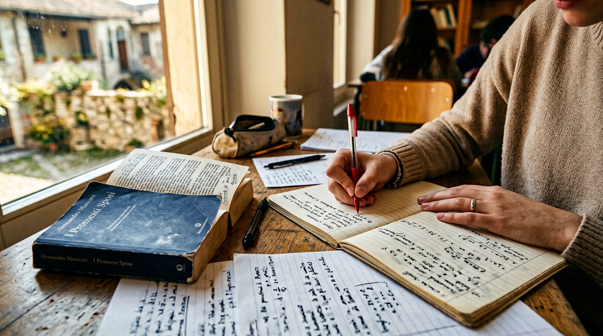
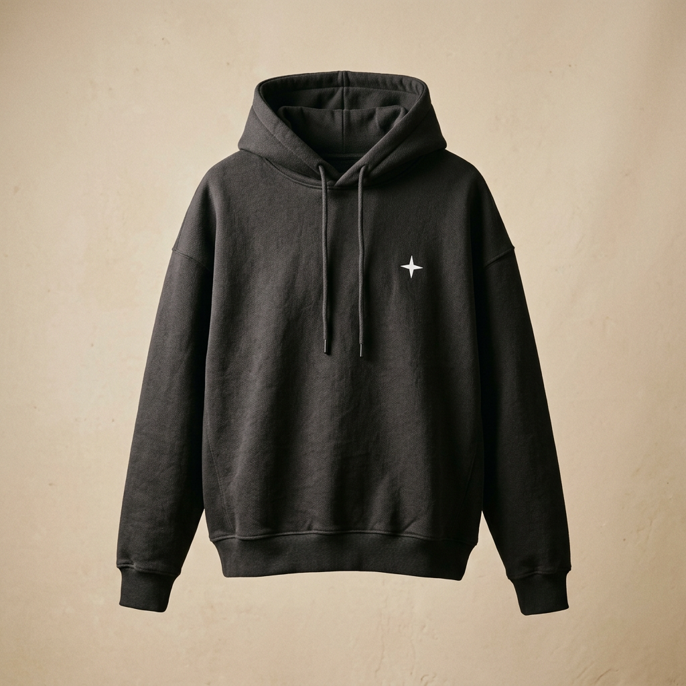

La tua voce
conta.
Uno spazio per raccogliere idee, bisogni e suggerimenti di tutta la scuola.
✳
Idee, progetti e persone. Uno spazio fatto da studenti, per gli studenti. Benvenutə in Lista Futura.

Crediamo in una scuola in cui sentirsi parte di qualcosa. Dove le idee si condividono, le persone si ascoltano e il futuro si costruisce insieme.
SEGUICI SU INSTAGRAM ↗LA SCUOLA È UN GIOCO DI SQUADRA
Una bacheca divisa per materie, per organizzare e ritrovare gli appunti che ti servono.
LA NOSTRA VETRINA
Più di un capo: un modo per sentirsi parte della stessa squadra. Scopri il nostro merch e contattaci per informazioni.
Ti interessa? Per disponibilità, taglie e informazioni, contattaci direttamente.
Numero di telefono in arrivo ↗Questa pagina è una vetrina: non si effettuano acquisti o pagamenti online.

THE FUTURALE IDEE FANNO STRADA
Il futuro della scuola si costruisce insieme. Qui troverai le proposte di Lista Futura per il 2026/27.
Uno spazio per raccogliere idee, bisogni e suggerimenti di tutta la scuola.
Occasioni per conoscersi, condividere passioni e vivere la scuola oltre le lezioni.
Strumenti e risorse per rendere lo studio un po’ più semplice, insieme.
SPUNTI DIMOSTRATIVI · LE PROPOSTE UFFICIALI SONO DA INSERIRE.
STESSA SCUOLA, STESSA SQUADRA
La Futura Cup prende forma qui. Tutte le informazioni su squadre, date e iscrizioni arriveranno presto.
SEGUI GLI AGGIORNAMENTI ↗PICCOLI VANTAGGI, GRANDI IDEE
Stiamo preparando uno spazio per le convenzioni dedicate agli studenti dell’Orazio. Resta connesso!
RIMANI AGGIORNATƏ ↗